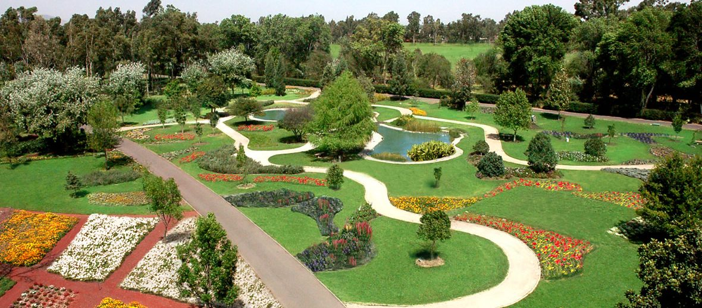

Conservación de la biodiversidad: Los parques ecológicos albergan una amplia variedad de especies de flora y fauna, muchas de las cuales pueden estar en peligro de extinción. Su protección es fundamental para mantener el equilibrio ecológico.
Protección de ecosistemas: Estos parques preservan diferentes tipos de ecosistemas, como bosques, selvas, humedales, y áreas marinas, asegurando la protección de los procesos ecológicos esenciales.
Investigación científica: Los parques ecológicos sirven como laboratorios naturales donde los científicos pueden realizar estudios sobre ecología, biología, y otros campos relacionados con el medio ambiente.
Educación ambiental: Estos parques ofrecen programas educativos y actividades que aumentan la conciencia pública sobre la importancia de la conservación y el respeto por el medio ambiente.
Turismo sostenible: Promueven un turismo responsable que minimiza el impacto ambiental y contribuye a la conservación del entorno natural. Esto incluye actividades como senderismo, observación de aves, y ecoturismo.
Importancia de preservar la naturaleza
La preservación de la naturaleza se refiere a la protección y el mantenimiento de los recursos naturales y los ecosistemas del planeta para asegurar su existencia y funcionalidad a largo plazo. Este concepto implica la implementación de prácticas y políticas que eviten la degradación del medio ambiente, la extinción de especies y la pérdida de biodiversidad, con el objetivo de mantener un equilibrio ecológico que beneficie tanto a la naturaleza como a las generaciones presentes y futuras de seres humanos.
La preservación de la naturaleza incluye acciones como la creación y gestión de áreas protegidas, la promoción de prácticas sostenibles en la agricultura, la pesca y la industria, la restauración de hábitats degradados, la reforestación, y la educación ambiental. También involucra la adopción de medidas para mitigar el cambio climático, la contaminación y otros impactos negativos de la actividad humana sobre el medio ambiente.
En resumen, la preservación de la naturaleza es una estrategia integral y multifacética que busca garantizar la salud y la viabilidad a largo plazo de los sistemas naturales que sostienen la vida en la Tierra.
Conecta con el medio ambiente
Senderismo y Caminatas: Explorar senderos bien marcados que atraviesan diversos ecosistemas, permitiendo a los visitantes experimentar la belleza natural y la biodiversidad del parque.
Observación de Aves: Con la presencia de una variedad de aves, los parques ecológicos son excelentes lugares para la observación de aves, donde se pueden ver especies locales y migratorias.
Fotografía de Naturaleza: Capturar la flora, fauna y paisajes naturales a través de la fotografía, una actividad popular que promueve el aprecio por la belleza del entorno natural.